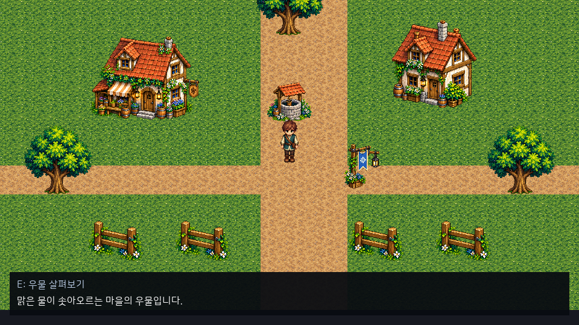

20. 컴포넌트 사용법
하이어라키에서 오브젝트를 선택하고 인스펙터에서 필요한 컴포넌트를 펼친다. 설명은 펼친 헤더 아래, 필드의 단위·제약은 마우스를 올렸을 때 표시된다. 헤더 우클릭으로 제거하고 Ctrl+Z로 복원한다. 실행 중 편집은 PlayWorld의 임시 상태다.
| 컴포넌트 | 사용법 | 예시·제약 |
|---|---|---|
| ObjectName | 오브젝트 이름 | 이벤트 대상·포털 도착 이름은 씬에서 유일해야 한다 |
| LocalTransform | 부모 기준 position/rotation/scale | +Y 위; 1 unit=48px. 단위 회전 쿼터니언 0,0,0,1 |
| WorldTransform / Parent / Children | 계층에서 파생되는 변환·연결 | 위치는 LocalTransform, 계층은 하이어라키에서 편집 |
| SpriteRenderer | sprite에 PNG 드래그, srcUV로 영역 선택 | 전체 UV 0,0,1,1; pivotPx는 영역 좌상단 기준 픽셀. tint 흰색은 원본 색 |
| BillboardRenderer | PNG·프레임 UV·발 피벗·mode 설정 | Full 카메라 축, YAxis 수직 유지, None 원래 회전. SpriteAnimator 지원. 같은 오브젝트의 SpriteRenderer와 함께 사용하지 않는다 |
| MeshRenderer | mesh에 GLB/glTF, material에 PNG 드래그 | 정적 임베디드 메시. 빈 material은 흰색. glTF 노드 변환·재질·리깅·외부 .bin 자동 연결 미지원 |
| Camera2D | current·followTarget·offset·deadzoneHalf·zoom·pixelSnap·bounds 설정 | Play/MyGame 로컬/인증 2D 공통 시야. 2D/3D를 합쳐 활성 하나. 저장·추종·Lua 사용법 |
| Camera3D | current·target·followTarget·FOV·near/far 설정 | 활성 하나; 위치는 LocalTransform. Play/MyGame용이며 에디터 작업 카메라와 별개 |
| FloorLevel | 높이 층 level | 지면 0; 렌더·충돌 층을 함께 확인 |
| Collider2D | shape/half/offset·그룹/층 마스크 | 48px 전체 폭은 반폭 0.5. isTrigger면 이동을 막지 않고 이벤트 발생 |
| KinematicBody2D | 충돌하며 이동하는 본체 | maxSlideIters=1~16. skin/snapToGround는 저장 호환 필드로 현재 2D 계산에 미적용 |
| CharacterController2D | enabled/speed·idleAnimation/walkAnimation | 최상위 활성 1명, 속도 0~100 unit/s. 3이면 144px/s. main 로컬 Lua의 mye.controller2d.set_enabled(self.entity, false)로 잠그면 정지·moving=false, 모션/방향 유지. 상호작용/포털도 차단. 잠금 시점/API |
| Collider3D | enabled/shape/half/offset/isTrigger | 축 정렬 상자/+Z 경사. half·offset은 로컬 단위이며 양수 Transform 스케일 적용 |
| KinematicBody3D | settings의 speed/gravity/jumpSpeed/floorSnap/stepHeight/skin | 접지·벽·천장 상태. 조작 캐릭터와 함께 사용; 자유 강체·메시 물리 미지원 |
| CharacterController3D | enabled/cameraRelative/idleAnimation/walkAnimation | 씬의 활성 조작 캐릭터 1명. WASD XZ·Space 점프 |
| SpriteAnimator | animation에 .anim, stateMachine에 .animstate GUID 지정, speed/playing 설정 | stateMachine이 지정되면 상태의 클립/시트를 우선하며 매개변수/커서는 객체별이다. 행동 작성/Undo·저장과 로컬 Lua 상태 조회/trigger 취소를 연결. speed=재생 배율, 이동 속도와 별개. 이미지 크기·에셋 참조 일치 필요. 표시 샘플은 첫 이벤트/전이를 소비하지 않으며 후속 모션은 고정 틱에서 연결. 방향·행동 전이·중단과 검수 범위 |
| InteractionTarget | enabled/radius/prompt | radius 안에서 E. 행동은 ObjectBehavior로 연결. main 소스에서 게임 창 하단에 prompt 표시 |
| GameUi | enabled/document | 저장한 .ui 에셋을 지정하며 활성 하나. 로컬 표시/입력 API·검수 범위 |
| ScenePortal | scenePath/spawnName/onInteract | assets/scenes/*.scene과 목적지 ObjectName. E면 InteractionTarget, 자동 진입이면 trigger Collider2D/3D |
| ObjectBehavior | 이벤트→행동 연결 또는 Lua return 테이블 | Start/Interact/TriggerEnter/TriggerExit. 연결 순서대로 실행, 최대64개. Lua64KiB |
| Progression | level/xp/maxLevel | 현재 레벨 내 XP. 성장·보상 규칙은 게임에서 정의 |
기본 조작 캐릭터
- 최상위 오브젝트를 선택하고 캐릭터 기본 이동 구성을 누른다. 또는 + 추가 → 캐릭터를 선택한다.
- SpriteRenderer.sprite에 PNG를 지정하고 발밑 피벗과 충돌 박스를 맞춘다.
- CharacterController2D.speed와 대기·걷기 모션을 지정한다.
- 재생하여 게임 창에서 WASD/방향키로 걷고 E로 상호작용한다. Pause/Stop은 에디터에 있다.
구성 버튼은 기존 값을 보존하며 누락된 스프라이트·충돌·본체·조작을 한 Undo 작업으로 추가한다. Lua로 별도 속도를 지정하려면 CharacterController2D를 제거하고 본체·충돌을 유지한다. 조작 컴포넌트가 있으면 Lua 이후 본체 속도를 다시 설정한다.
3D 표시와 게임 카메라
+ 추가 → 3D 메시 / 빌보드 / 게임 카메라 3D로 배치한다. 에셋 우클릭 가져오기로 PNG 또는 정적 GLB를 등록하고 Inspector의 에셋 필드에 드래그한다. 메시 파일은 모델 로컬 정점으로 취급한다. glTF의 노드 변환을 굽고 임베디드 GLB로 내보내며, 단일 알베도는 별도 PNG로 지정한다. 메시의 뷰포트 드롭·직접 선택·3D 기즈모는 아직 없다. 하이어라키 선택과 XYZ Inspector 편집·Undo·저장/재로드를 사용한다.
표준 glTF 앞면은 법선이 향한 쪽에서 보이고 반대쪽은 컬링된다. 0.2.3은 위향 지면이 아래에서만 보이던 0.2.2 결함을 수정했다. 해당 결함에 맞춰 인덱스를 뒤집은 파일은 외부에서 표준 앞면으로 다시 내보낸다. 기존 원본/GUID는 엔진이 변경하지 않는다.
빈 material은 기본 흰색이다. material에 지정한 PNG나 mesh/sprite GUID가 로드되지 않으면 오류다. 자동 Play/MyGame 검사에서는 exit 1을 확인한다. 에디터 하단 오류/콘솔의 씬 경로·오브젝트·GUID를 보고 파일과 .meta, 가져오기 결과를 확인한 뒤 에셋 목록을 새로고침하고 Play를 다시 실행한다. 오류 캡처를 정상 표시로 판단하지 않는다.
게임 카메라는 기본 위치 (0,3,-8), target=(0,0,0), 세로 FOV 45도다. current가 켜진 Camera2D/Camera3D는 씬에 합쳐 하나만 둔다. 저장 카메라가 없으면 공통 기본 2D 추종을 사용한다. near/far는 월드 단위이며 0 < nearPlane < farPlane, FOV는 1~179도다. eye와 target은 같은 점이나 +Y와 평행한 방향이 될 수 없다. 잘못된 설정은 씬 검증/Play에서 오류로 표시한다.
followTarget이 비어 있으면 카메라의 월드 위치에서 월드 target을 본다. 고유 ObjectName을 지정하면 카메라 월드 위치와 target 모두 그 대상의 월드 위치에 더할 오프셋으로 취급한다. 대상은 월드 변환을 가진 오브젝트 하나여야 한다. 회전은 target으로 지정하며 LocalTransform.rotation은 게임 카메라 방향에 사용하지 않는다. orbitEnabled=true이면 yawDegrees·pitchDegrees·distance를 사용한다. Q/R·오른쪽 드래그 회전과 정적 장애물의 거리 축소를 지원한다. 추종 보간·휠 줌은 없다. 설정/조작을 확인한다.
빌보드 피벗은 잘라낸 프레임의 좌상단 기준 픽셀이다. (0,0)은 기존 계약의 발밑 중앙 자동값이다. Full/YAxis는 발 앵커와 축별 크기를 유지하고 시각적인 방향만 바꾼다. 음수 배율의 반전은 X축으로 합성하며 부모 shear의 정확한 재현은 지원하지 않는다. 모션 편집기에서 .anim을 지정하면 기존 방향 클립·상태·프레임 이벤트 경로를 사용한다. 시점에 따른 방향 파라미터 자동 설정은 없으며 게임 동작에서 지정해야 한다.
CharacterController2D·Collider2D는 XY 물리를 유지한다. XYZ에는 별도 3D 컴포넌트를 사용한다. 동일 정적 장면의 루프백 XYZ 동기화를 지원하며 온라인 맵/규칙·카메라 상대 8방향 에셋 매핑은 미지원이다. 지원 범위를 확인한다.
코드 없이 연결
ObjectBehavior의 연결은 이벤트, 행동, 대상, 매개변수 순서로 설정한다. 대상이 비어 있으면 현재 오브젝트다. Message는 메시지, SetVisible은 표시 전환, MoveTo는 즉시 위치 변경, ChangeMap은 씬 경로+도착 이름, LuaCallback은 return 테이블의 함수 이름을 사용한다. MoveTo는 경로 탐색 이동이 아니다.
Lua 콜백·함수·변수는 Lua API, 맵/저장 실패 흐름은 오브젝트 작업을 참고한다. 표시나 메시지 기반만으로 게임 HUD·퀘스트·온라인 동기화가 자동 완성되지는 않는다.
안내를 게임 창에서 확인하세요.
main 소스의 Interact → Message는 별도 Play 창과 MyGame 하단에 표시됩니다. 씬을 저장하고 Play에서 대상 근처에 접근한 뒤 상호작용 입력(기본 E)을 누르세요. 위에는 대상의 prompt, 아래에는 Message가 보이고 로그에도 남습니다.

게임 카메라와 독립된 하단 앵커에 그리므로 카메라 잔여 이동에 따라 글자가 흔들리지 않습니다. 월드와 같은 정수 배율/여백을 사용합니다. 메시지는 줄바꿈하고 최대 높이에서 자릅니다. Pause는 표시를 유지하고 다음 Message·Stop·맵 교체가 이전 문구의 수명을 끝냅니다.
표시 한계와 문제 해결
각 문자열 최대 4096 UTF-8 bytes, 최대 패널 높이 180px이며 스크롤/닫기/선택지는 없습니다. 앱 옆 fonts/NanumSquareRoundR.ttf가 누락/손상되면 오류를 확인하세요. 읽기 전용 안내는 HP/가방/퀘스트 HUD나 온라인 대화를 완성하지 않습니다. 설치된 0.3.0에는 이 게임 창 표시 연결이 없습니다. UI 지원/수명 계약을 확인하세요.
저장한 GameUi와 Lua 상태 표시: .ui 임포트·GUID·HP 게이지·일반 한글 텍스트·활성 상태의 main 소스 연결을 확인하세요. UI 문서 작성/Undo·저장과 게임 렌더 미리보기도 연결했습니다. 로컬 클릭/키보드 포커스·모달 차단은 연결했습니다. TextInput·문자/조합·고정 틱 제출과 Release 합성 네이티브6건도 확인했습니다. 실제 IME 확정/후보창·직접 장치/DPI·패드 UI·온라인·설치 0.3.0 지원은 미완료입니다.